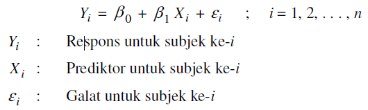
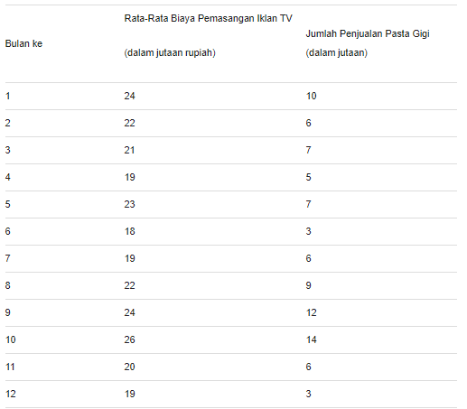
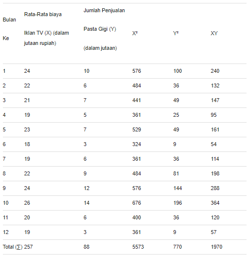
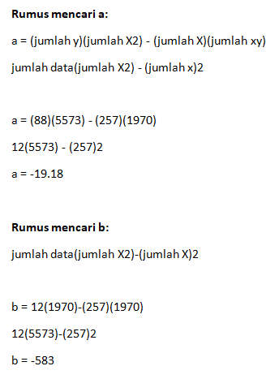

Mengenal Regresi Linear
Regresi linear (linear regression) adalah teknik yang digunakan untuk memperoleh model hubungan antara 1 variabel dependen dengan 1 atau lebih variabel independen. Jika hanya digunakan 1 variabel independen dalam model, maka teknik ini disebut sebagai regresi linear sederhana (simple linear regression), sedangkan jika yang digunakan adalah beberapa variabel independen, teknik ini disebut regresi linear gkita (multiple linear regression). Variabel dependen pada regresi linear disebut juga sebagai respons atau kriterion, sedangkan variabel independen dikenal pula sebagai prediktor atau regresor. Kovariat adalah variabel independen yang berkorelasi dengan prediktor lainnya, juga mempengaruhi respons. Kovariat umumnya tidak diminati hubungannya dengan respons dan hanya digunakan untuk pengendalian hubungan prediktor-respons dalam model. Respons pada regresi linear selalu berupa variabel kontinu, sedangkan prediktor dapat berupa variabel kontinu, indikator, ataupun karegorik yang disubstitusikan menjadi variabel indikator.
Model yang digunakan untuk regresi linear sederhana adalah:
Fungsi Analisis Regresi Linear
1. Memprediksi Kondisi Tertentu
Kita dapat mengetahui atau memprediksi kondisi maupun keadaan yang sedang terjadi dari sebuah aktivitas. Prediksi tersebut bertujuan untuk memperbaiki keadaan selanjutnya, agar kebutuhan atau pengeluaran bisa disesuaikan menggunakan prediksi yang diperoleh.
2. Mencari Ada atau Tidaknya Pengaruh Suatu Kondisi
Terkadang kita pasti akan merasa ragu mengenai pengaruh yang terjadi pada suatu kondisi tertentu. Melalui analisis regresi linier yang sederhana, kita bisa mengetahui secara pasti mengenai ada atau tidaknya pengaruh dari kondisi atau tindakan yang terjadi.
Langkah Analisis dan Contohnya
1. Menentukan Tujuan Analisis
Ada berbagai tujuan yang ingin dicapai dengan melakukan analisis regresi linier, misalnya untuk mencari
pengaruhataupun memprediksi sesuatu. Agar rumus yang digunakan sesuai, maka tujuan harus ditentukan terlebih
dahulu sebelum mulai menganalisis.
Contoh:
Tujuan analisis regresi linier untuk memprediksi jumlah penjualan pasta gigi jika biaya pemasangan iklan di
TVtidak tetap.
2. Mencari Objek yang Menjadi Variabel Utama
Pengaruh hanya bisa terjadi pada dua objek. Hal itu karena antara yang satu dengan lainnya saling berkaitan. Objek yang satu akan menjadi penyebab suatu keadaan terjadi dan bisa ditulis dengan variabel X. Sementara objek lainnya akan menjadi akibat dari penyebab yang terjadi dan selanjutnya ditulis dengan variabel y.
Contoh:
X = Biaya pemasangan iklan TV
Y = Jumlah penjualan pasta gigi
Mengumpulkan Data
Langkah analisis selanjutnya adalah mengumpulkan seluruh data yang sudah di ambil dari penelitian. Dalam mengumpulkan data, hendaknya ditulis dalam bentuk tabel
Contoh:
Mengelompokkan Variabel
Setelah semua data kita peroleh dari bulan ke satu hingga ke 12 beserta objek yang dipengaruhi dan yang tidak dipengaruhi, selanjutnya kita bisa mengelompokkannya dalam bentuk variabel yang mewakili untuk mempermudah analisis selanjutnya.
Contoh:
Menggunakan Rumus Regresi
Jika data sudah dikelompokkan dengan variabel , kita bisa memulai langkah analisis dengan memasukkan rumus yang tersedia. Namun sebelumnya kita harus mencari konstanta a dan b.
Membuat Model Persamaan
Model persamaannya adalah y=a+bx selanjutnya kita bisa memasukkan data yang sudah ada dalam persamaan tersebut, sehingga diperoleh data seperti berikut.
Y= – 19,18 + (-583)X
Melakukan Prediksi
Langkah terakhir prediksi bisa langsung dilakukan menggunakan persamaan yang sudah tersedia. Misalnya kita ingin mengetahui jumlah penjualan jika biaya iklan 25 (dalam jutaan rupiah), maka perhitungannya adalah Y= – 19,18 + (-583) (25) = 14,55 Dari perhitungan tersebut dapat diketahui bahwa jika biaya iklan TV yang dilakukan mencapai 25 (dalam jutaan rupiah), maka jumlah penjualan mencapai 14,55 (dalam jutaan).